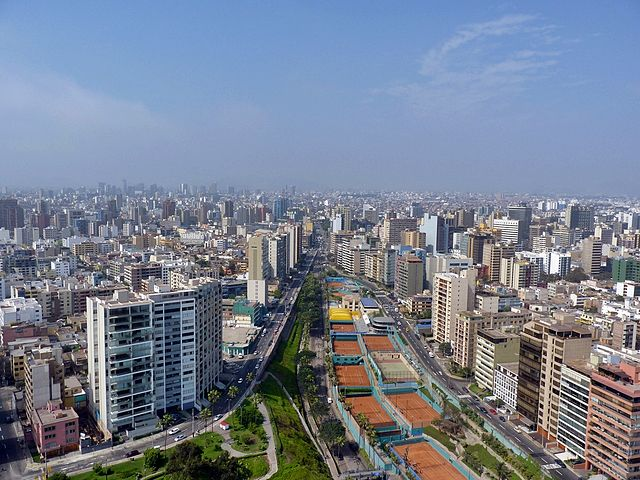

nacionales

lima , la provincia donde se situa la ciudad de los reyes como se la llamo cuando fue fundada.
con sus bellas playas y muchos atractivos que ver , es casi una obligacion visitar lima si visitas
el perú.
Lima
cusco , en su tiempo la capital del poder del imperio incaico y que guarda en su tierras una de las maravillas del mundo: el machu picchu. junto al resto de monumentos tambien es una parada obligatoria al visitar el perú.
Cusco
Tacna es una región singular: desiertos y valles fértiles conviven para crear paisajes únicos. El clima cálido de las mañanas te permitirá disfrutar de sus playas con oleajes tranquilos y sus aguas termales y lagunas serán los lugares perfectos para que te puedas relajar.
Tacna
En Puno podrás ser parte de una atmósfera mágica donde la leyenda, las tradiciones y las fiestas multicolor se respiran todos los días. Sus sorprendentes islas flotantes como los Uros, fabricadas con esteras de totoras, solo son superadas por el místico Lago Titicaca.
Puno
Conocida como la Ciudad Blanca por su arquitectura esculpida en sillar, Arequipa resplandece favorecida por un clima siempre soleado todo el año y un cielo azul que te invitan a caminar y admirar la belleza de sus monumentos, nevados, volcanes,etc. además de su exquisita gastronomía y una vida nocturna que te animarán a regresar más de una vez.
Arequipa
Loreto es una verdadera oportunidad para desconectarte del mundo. Paisajes exóticos y una fauna y flora rica en variedad te envolverán desde que empieces tu recorrido. Conoce sus bosques sobre arena blanca, sé parte de la tribu de los Boras por un día y recorre parte del río Amazonas de la mano de los que mejor la conocen: su gente.
Loreto
San Martín es una región donde puedes reencontrarte con la naturaleza y dejar de lado el trajín diario. Conoce sus cataratas naturales y baños termales con cualidades medicinales. Prueba su comida exótica y vive la experiencia única del turismo comunitario en Tingana y Santa Elena, sin perderte la diversión y alegría que solo la selva peruana regala a todos sus visitantes.
San Martin